Freelance Product Design & Prototype Development
Selected projects involving CAD design, rapid prototyping, product development, and electronics integration.

Selected projects involving CAD design, rapid prototyping, product development, and electronics integration.
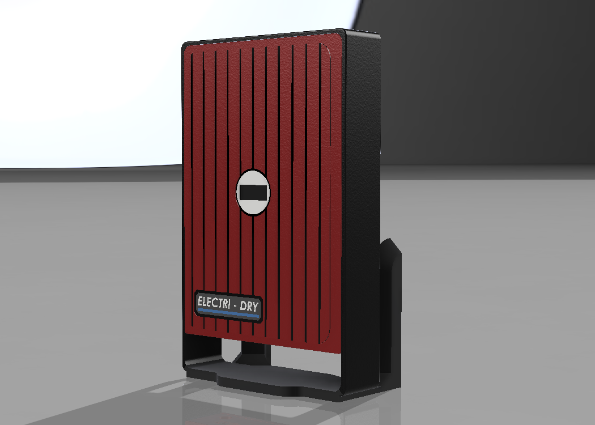
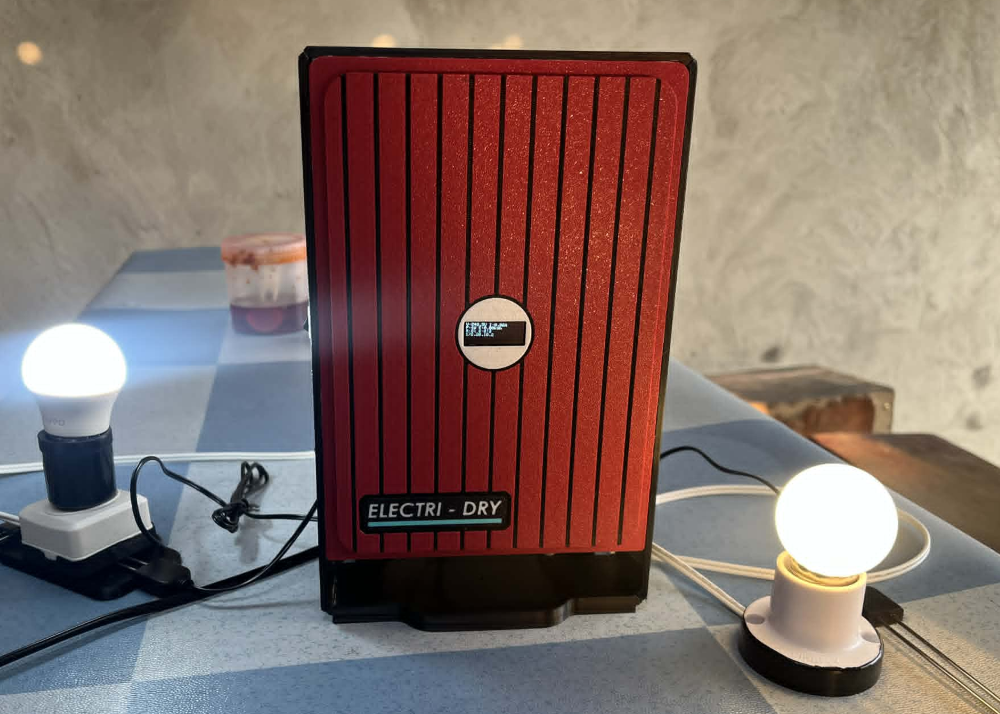
Automatically detects floodwater, disconnects electrical outlets to prevent electrocution, and monitors household power consumption in real time.
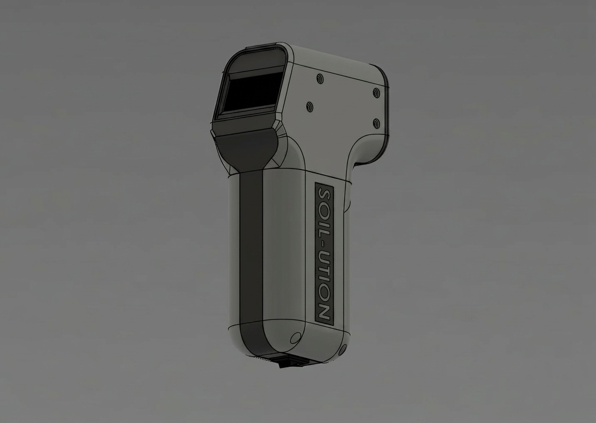
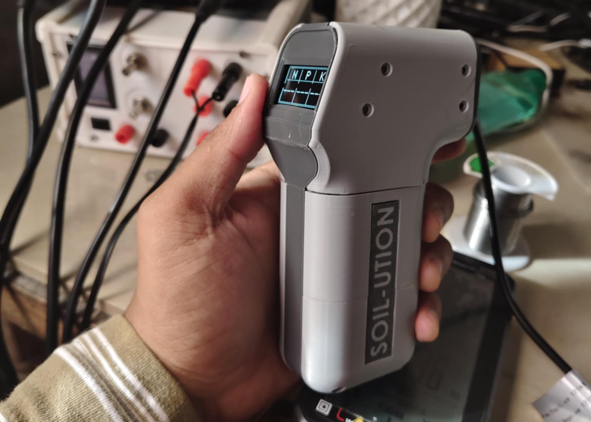
A handheld device for rapid measurement of soil nitrogen (N), phosphorus (P), and potassium (K) levels to support precision agriculture.
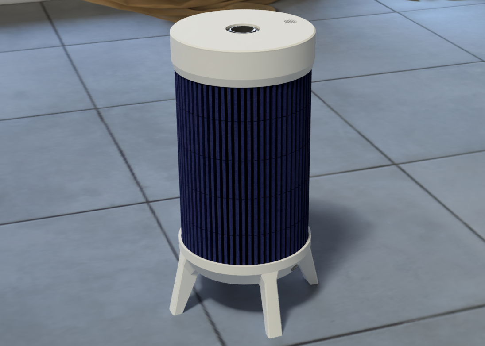
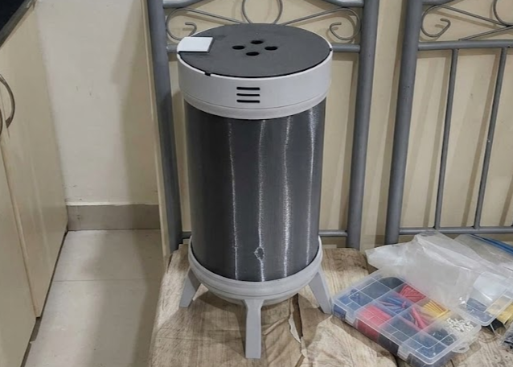
Monitors indoor air quality parameters and automatically activates purification mechanisms to maintain a healthier environment.
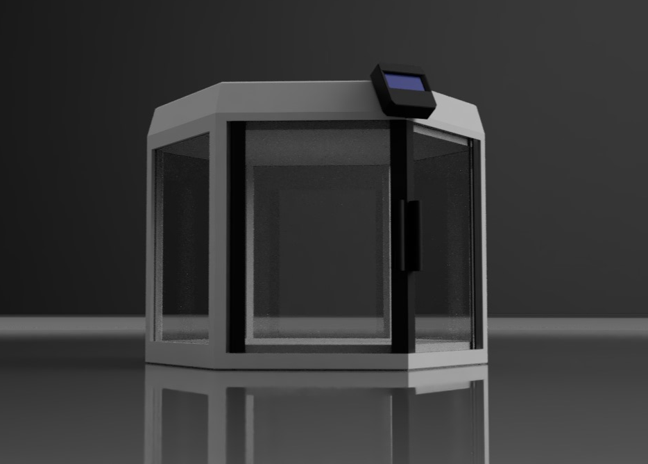
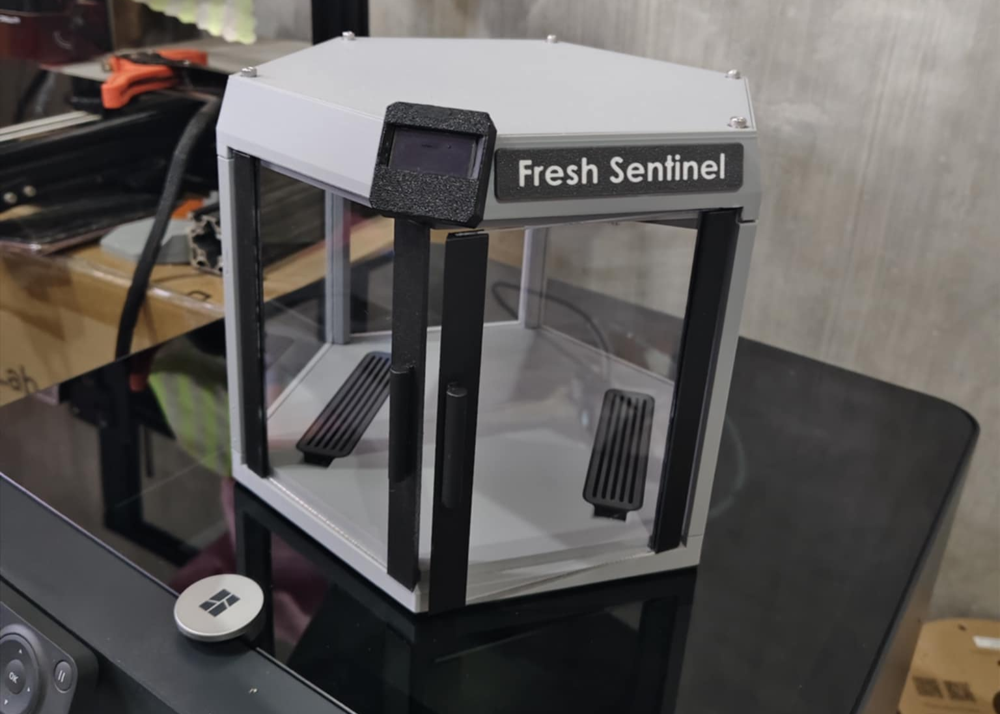
Detects early signs of food spoilage using environmental sensing technology to improve food safety and reduce waste.
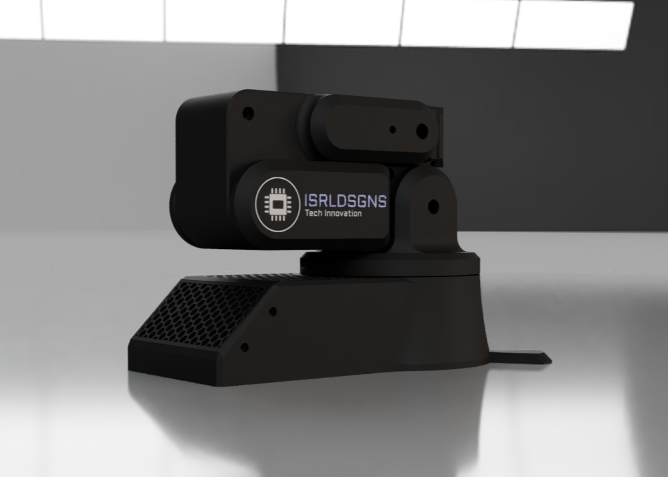
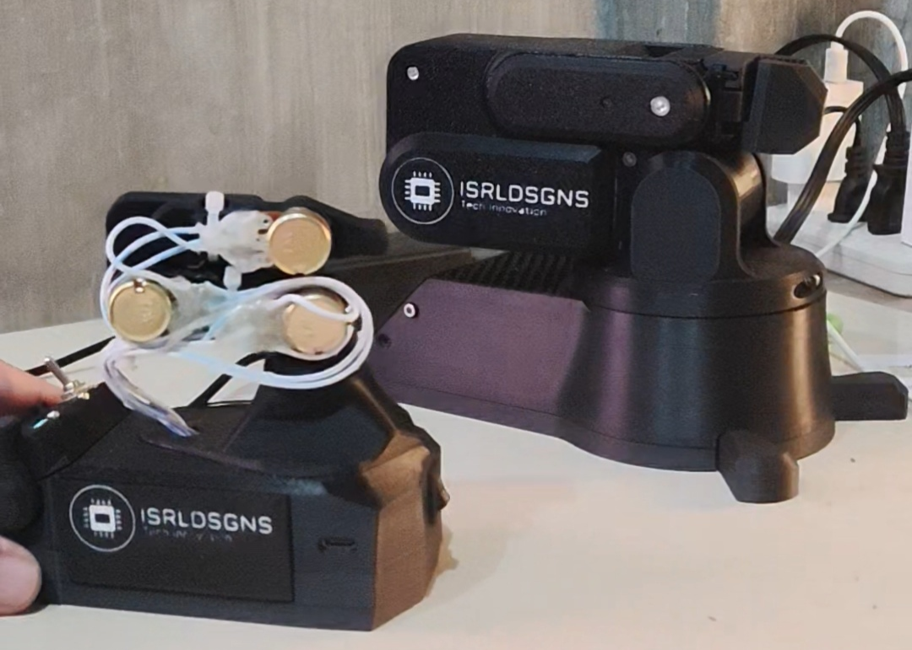
A teachable robotic arm that mirrors operator gestures in real time while supporting position recording and automated movement playback.
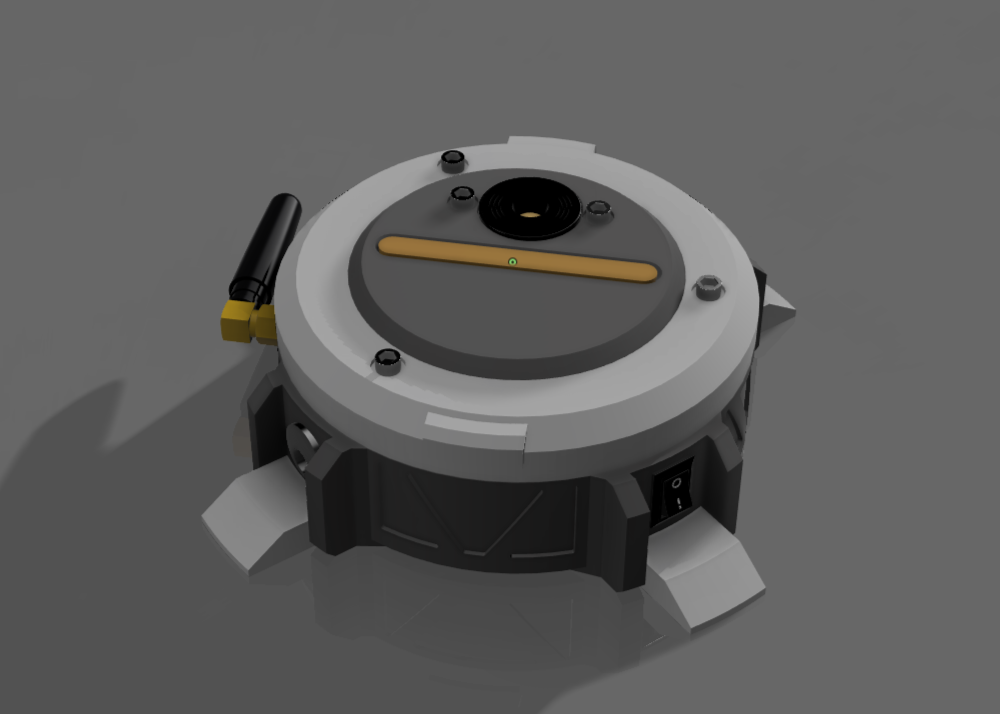

Detects fire hazards in real time and automatically sends emergency SMS notifications through a GSM communication module.
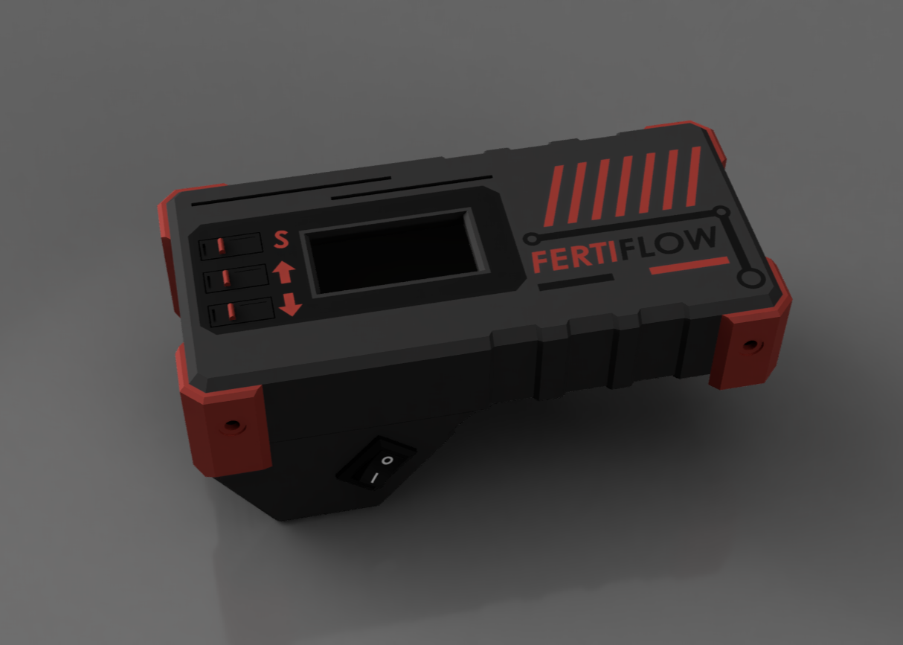
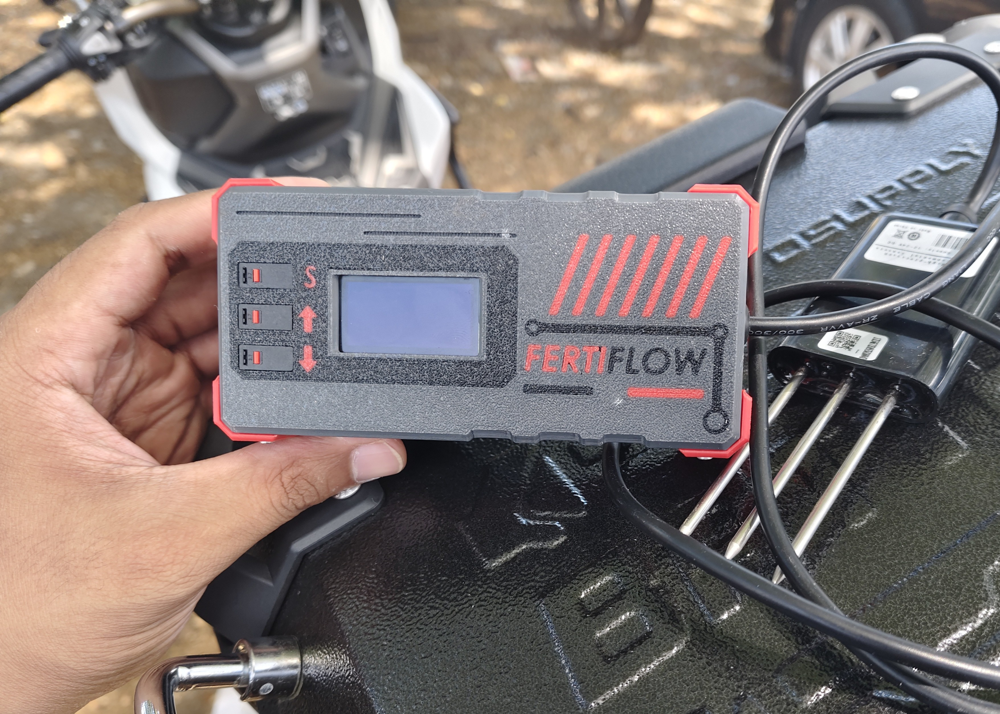
A handheld soil analysis device designed to provide rapid NPK measurements for fertilizer management and crop monitoring.